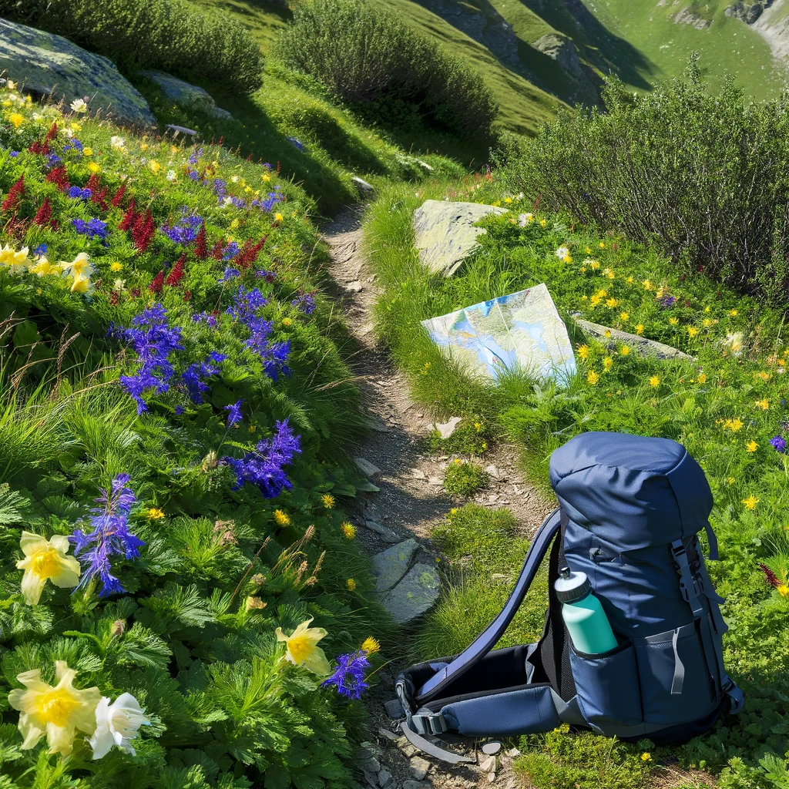

Exploring the Nature

Nature is an inherent character or constitution ,particularly of the ecosphere or the universe as a whole. In this general sense nature refers to the laws, elements and phenomena of the physical world, including life.
It is pic of nature to enjoying the nature by trekking.
A fine river View
River it's any natural stream of water that flows in a channel with defined banks.Modern usage includes rivers that are multichanneled, intermittent, or ephemeral in flow and channels that are practically bankless.
It represents the pleasant view of nature with river.
A lion cub
Here the blog is about cute little lion.The lion is a large cat of the genus Panthera, native to Africa and India.
It has a muscular, broad-chested body; a short, rounded head; round ears; and a dark, hairy tuft at the tip of its tail.